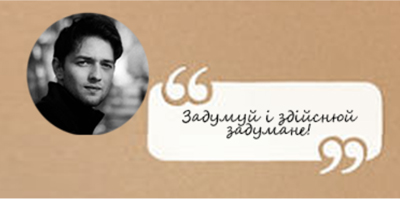
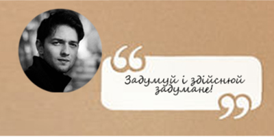

Про мене
 Звичайне слово “так” може закликати
до неймовірних пригод. Варто частіше
його використовувати і мандрівки не
будуть такими далекими
 Звичайне слово “так” може закликати
до неймовірних пригод. Варто частіше
його використовувати і мандрівки не
будуть такими далекими